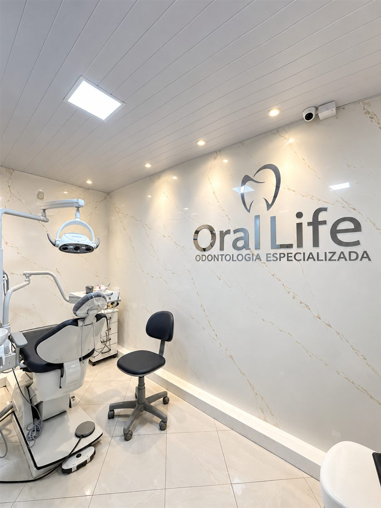

Facetas em resina composta em Salvador
Harmonize forma, cor e pequenos espaços do seu sorriso com um tratamento conservador — planejado sob medida para você.
Harmonização do sorriso com o mínimo de desgaste
A faceta em resina composta é uma fina camada de resina aplicada sobre o dente para melhorar forma, cor e tamanho, e fechar pequenos espaços. É uma das técnicas mais conservadoras de harmonização do sorriso: na maioria dos casos, o desgaste do dente é mínimo — ou não existe.
Para quem é indicada
- Pequenos desalinhamentos de forma ou cor
- Espaços entre os dentes (diastemas)
- Desgastes nas bordas dos dentes
- Quem quer melhorar o sorriso preservando a estrutura natural
Como é feita
1. Planejamento: fotos do sorriso, escolha da cor e conversa honesta sobre o que é possível
2. Preparo mínimo do dente, quando necessário
3. Aplicação da resina camada a camada
4. Escultura, ajuste e polimento final
Aqui ninguém promete “sorriso de artista” sem antes avaliar. O planejamento considera a sua face, a sua mordida e as suas expectativas — e você acompanha as escolhas.
Como é feita a faceta em resina
-
Planejamento
Fotos, escolha da cor e definição do que será feito — tudo com sua aprovação.
-
Preparo
Mínimo, e em muitos casos zero desgaste.
-
Aplicação
A resina é aplicada camada a camada e esculpida em consulta.
-
Acabamento
Ajustes de mordida e polimento — o detalhe que dá naturalidade.
Duração média
- Sessões: 1 a 2 sessões de 1 a 2 horas
- Variação: conforme o número de dentes envolvidos
Cuidados depois
- Evite roer unhas, morder objetos e abrir coisas com os dentes
- Escovação suave e fio dental diário
- Revisões e polimentos periódicos mantêm o brilho
Quer saber se as facetas em resina são indicadas para o seu sorriso? Comece por uma avaliação.
Agendar avaliação pelo WhatsAppPerguntas sobre facetas em resina
Estraga o dente?
É um tratamento conservador: na maioria dos casos o desgaste é mínimo ou zero. É o que diferencia a resina de técnicas mais invasivas.
Quanto tempo dura?
Depende dos seus hábitos e da manutenção. Com bons cuidados e polimentos periódicos, as facetas se mantêm bonitas por anos.
Posso clarear os dentes antes?
Sim, e em muitos casos essa é a ordem recomendada: clareia-se primeiro e depois se casa a cor da resina. O dentista define a sequência no planejamento.
Amarela com o tempo?
Resinas podem perder brilho com hábitos como café e cigarro. Polimentos periódicos devolvem a aparência.

Um sorriso mais harmônico, sem perder o que é seu
Agende uma avaliação e veja o que é possível para o seu sorriso — com planejamento e expectativa realista.